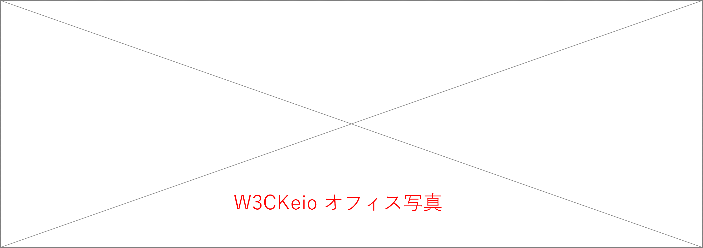

W3C
W3C
W3C Keio / W3C慶應義塾大学

W3C (World Wide Web Consortium) は、すべての人があらゆる環境で同じようにデータを扱える「One Web」のためにWWW技術の情報提供、仕様策定と促進、新技術のプロトタイプの実装、また、ソフトウェアやツールといった相互運用可能な技術開発に取り組んでいる国際的コンソーシアムです。「Lead the Web to its Full Potential」を使命とし、情報通信産業や商取引、あるいは集団的な合意に基づくフォーラムとしてウェブの可能性を最大限に導き出します。慶應義塾大学に設置されたW3C Keioは、世界4箇所に設置されているW3Cホストの1つとして、米・MIT (マサチューセッツ工科大学)、仏・ERCIM (欧州情報処理数学研究コンソーシアム)、中・北京航空航天大学とともにW3Cを運営しています。
新着情報
20.06.16「ウェブブラウザの縦書きレイアウトに関する国際標準化および普及活動への貢献」が2020年度情報通信技術賞 総務大臣賞を受賞
2019年12月にW3C勧告に到達した「CSS Writing Modes Level 3」までに至る経緯とその成果を評価いただき、本作業に日本国内で取り組んできた団体が、情報通信技術委員会 (TTC・The Telecommunication Technology Committee)様の「2020年度情報通信技術賞 総務大臣表彰を受賞しました。詳細はこちら
19.04.08 2回目の技術・工学エミー賞を受賞
W3CはNATAS (The National Academy of Television Arts and Sciences・米国テレビジョン芸術・科学アカデミー)から第70回技術・工学エミー賞 (Technology & Engineering Emmy Award)を受賞しました。エミー賞は、世界のテレビ技術の発展に貢献した個人や組織に与えられる大変に権威のある賞で、授章式は2019年4月8日夜 (現地時間)、ラスベガスのウィンホテルにおいて開催されました。。詳細はこちら
19.02.13 W3C Steering Committee・村井純が、フランス政府よりレジオン・ドヌール勲章シュヴァリエを受賞
W3Cにも、その活躍の場を広げている村井純 政策・メディア研究科委員長／環境情報学部教授（当時）が、フランス政府より「レジオン・ドヌール勲章シュヴァリエ」を受賞しました。これは、インターネット研究を通して日仏間の学術交流発展へ貢献した功績に対して授与されたものです。本賞は、1802年にナポレオン・ポナパルトによって創設されたフランス最高位の勲章で、さまざまな分野における民間人の「卓越した功績」を表彰しています。詳細はこちら
18.10.13 「縦書きWeb」が2018年グッドデザイン賞を受賞
W3C (World Wide Web Consortium)で国際標準化を目指し、総務省支援の「縦書きWeb普及委員会」が開発する「縦書きWeb」が2018年度グッドデザイン賞 (主催：公益財団法人日本デザイン振興会) を受賞しました。詳細はこちら